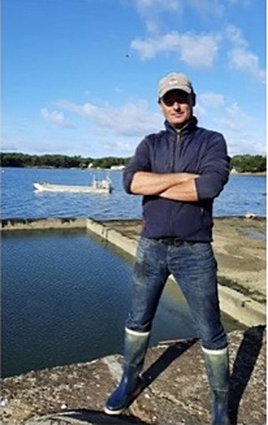

Crac'h Flash Infos — Octobre 2021
SARL Huîtres et Coquillages Le GuennecFrédéric Le Guennec — 64 Kersolard, Crac'h
Installation
Frédéric s'est installé en 2003 en reprenant l'affaire familiale : il est la 4e génération à la tête du chantier.
Type d'ostréiculture
Huîtres creuses, coques et palourdes. Le chantier est situé sur la rivière de Crac'h ; l'exploitation possède 7 hectares de parc sur Locmariaquer, Saint-Philibert et Arradon.
Ses outils
Un chaland alu de 11 mètres, et un bâtiment de production équipé d'une chaîne de tri, de calibrage et de bassins de purification. Frédéric vend sa production sur les marchés et livre également ses produits aux restaurateurs.
Évolution du métier
« J'évolue sur un rythme de croisière qui me va bien. J'assure la production qui convient à ma clientèle et je n'ai pas le souhait de me développer plus », affirme Frédéric.
« Je suis passionné par mes produits, je ne cultive pas de grosses quantités, mais je privilégie la qualité. »

Crac'h Flash Infos